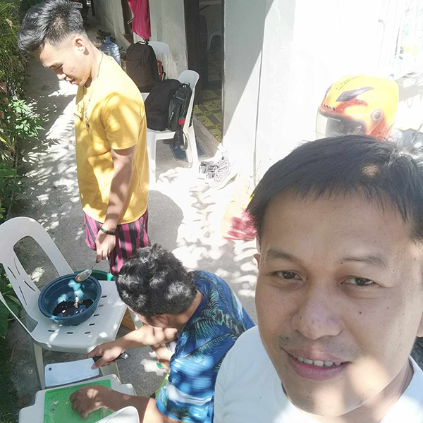
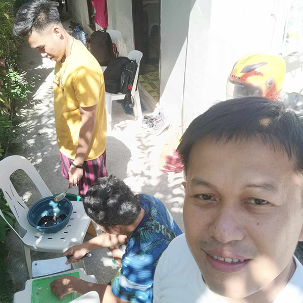

Before having fun in the beach, we got ready for a yummy beach feast. We added tasty flavors to the pork chop and making sure the grill was all set with the right tools for cooking.
 

With the grill sizzling away, we cooked pork chops perfectly, and the yummy smell drew everyone in. The beach breeze added a nice touch as we grilled our favorite meats for a tasty feast.

After our cooking the porkchop, we gathered around a beach table to enjoy the delicious results. Tasting the seasoned perfectly grilled pork chops made for a super tasty time filled with laughter and happy taste buds.
Ready to cool off, we raced into the refreshing waves, diving into the cool sea. The sunny water was a perfect escape, and splashing around brought simple joy as we swam in the gentle waves.
Our beach day got active when we set up a volleyball invisible net in the soft sand. We had lively matches, with sandy dives and energetic spikes creating a friendly competition and lots of laughs by the shoreline.
As the day ended, we all gathered on the beach, watching the amazing colors of the setting sun. The sky turned warm shades, casting a peaceful glow over the ocean, making a perfect backdrop for us to enjoy and reflect on the day.